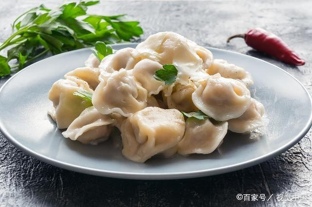

现代人因为白天工作比较繁忙而没有好好享受美食，到了下班后晚餐非常的丰富，但不合理的吃晚餐容易诱发多种疾病。
若晚餐摄入太多热量时会增加血液中胆固醇含量，刺激低密度脂蛋白生成，让太多胆固醇在动脉壁堆积，从而诱发冠心病和动脉硬化等。
尿结石主要成分是钙，食物中的一部分钙被胃壁吸收利用外，多余的钙会从尿液中排出体外。吃完饭4~5个小时是排尿高峰期，晚餐吃的太晚的话，人们已经不在活动，直接上床入睡。晚餐后所产生的尿液会在尿路中停留，不能及时排出，增加尿路中尿液钙含量，从而引起尿结石。
晚餐吃太多肉类的话会增加胃肠道负担，升高血压。人们睡觉时血液循环速度减慢，血脂会在血管壁上沉积，引起动脉粥样硬化，导致高血压。经过研究发现晚餐经常吃肉食的人比吃素食的人群血脂高2~3倍左右。
中老年人吃晚餐吃得过饱的话，会对胰岛带来反复刺激，让大量胰岛素分泌，让胰岛细胞提前衰竭，从而引起糖尿病。
晚餐吃得太晚的话胃部没有充足时间来消化食物，没有被消耗的热量会在身体中转化成脂肪堆积起来。晚餐尽量安排在7点之前，能让肠胃有足够时间消化食物。饭后适当运动能控制体重。
吃饭时细嚼慢咽，能给胃肠道充足时间消化，让食物彻底被消化，帮助吸收营养物质。
晚餐不能吃得太多，七分饱即可，若吃太饱的话会引起食物不消化，血液中的葡萄糖含量得不到消耗，容易引起糖尿病。
晚餐尽量以清淡为主，低脂肪，低油分少糖分和少盐分。晚餐可以多吃蔬菜和水果，尽量以粥类或者汤类为主食。睡觉前4-6个小时不能喝酒，也不能喝含有咖啡因的饮料如咖啡或浓茶。均衡摄入营养，但控制量，以免诱发其他健康问题。晚餐不能吃过于辛辣刺激食物。